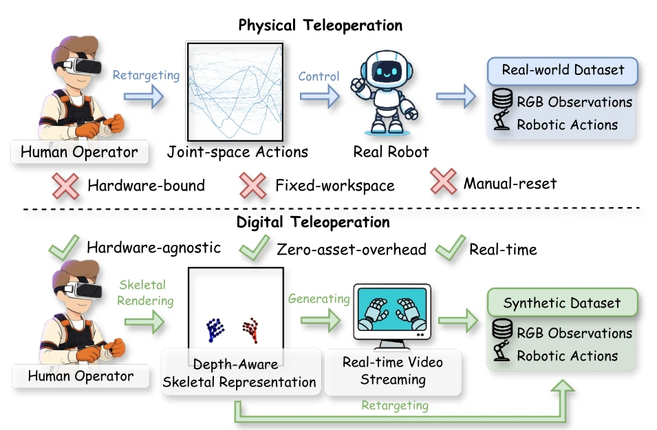
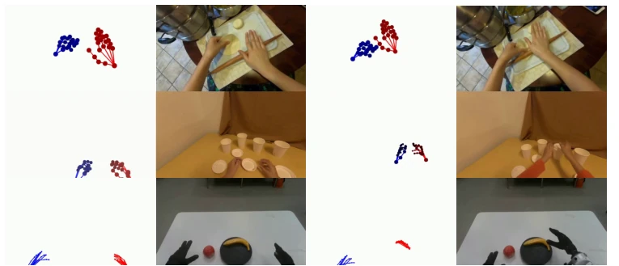
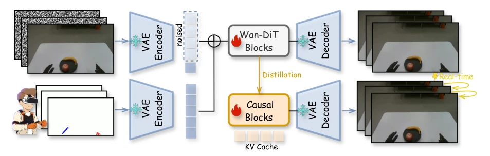
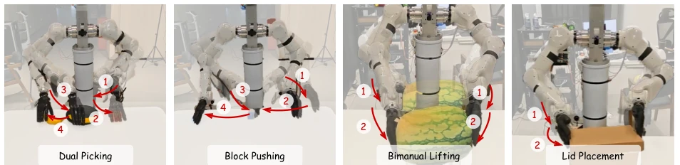
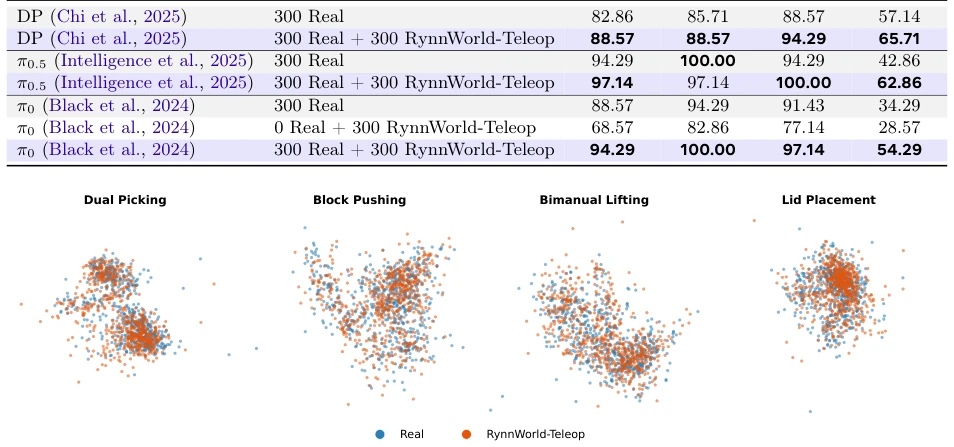
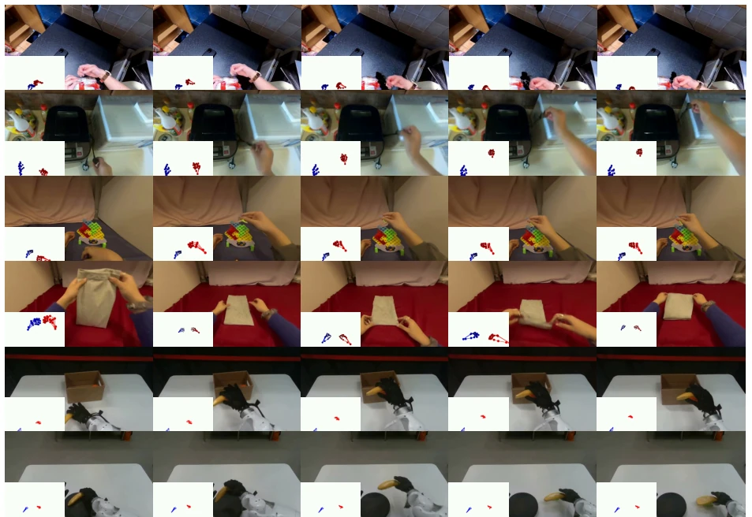
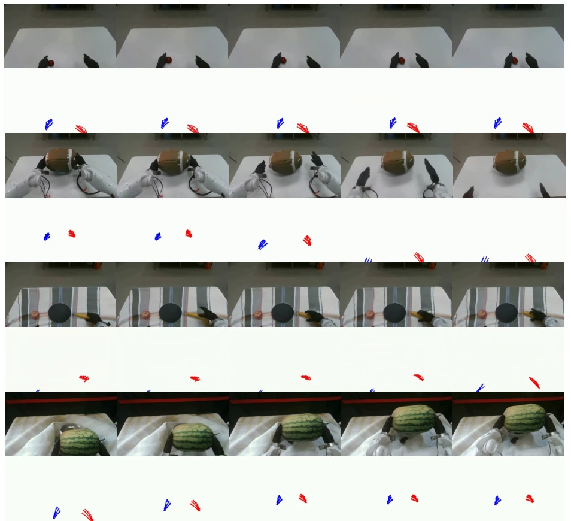
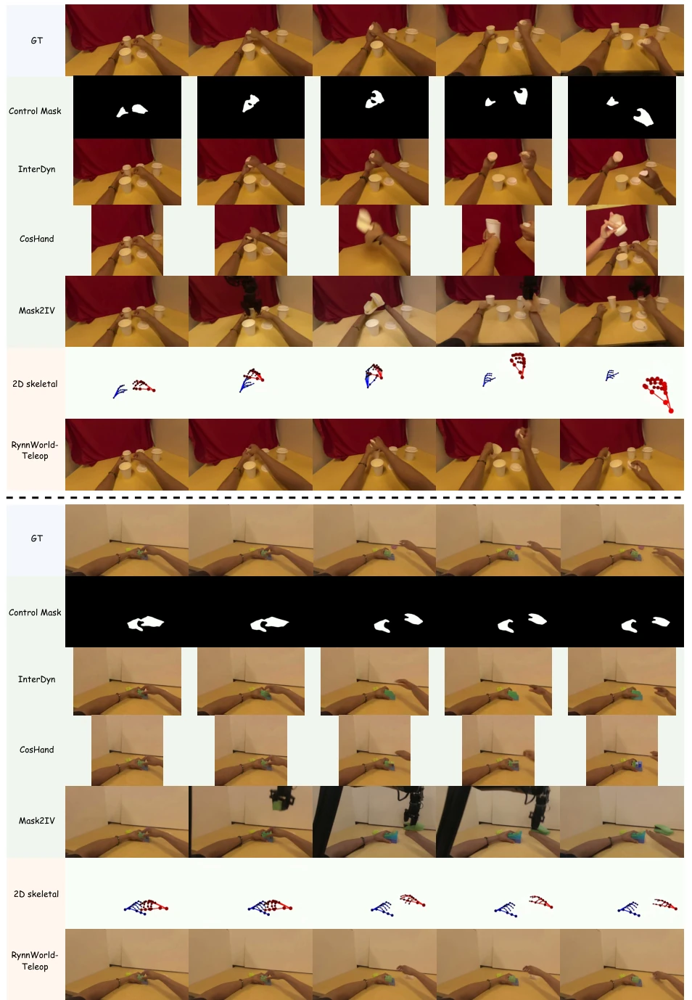
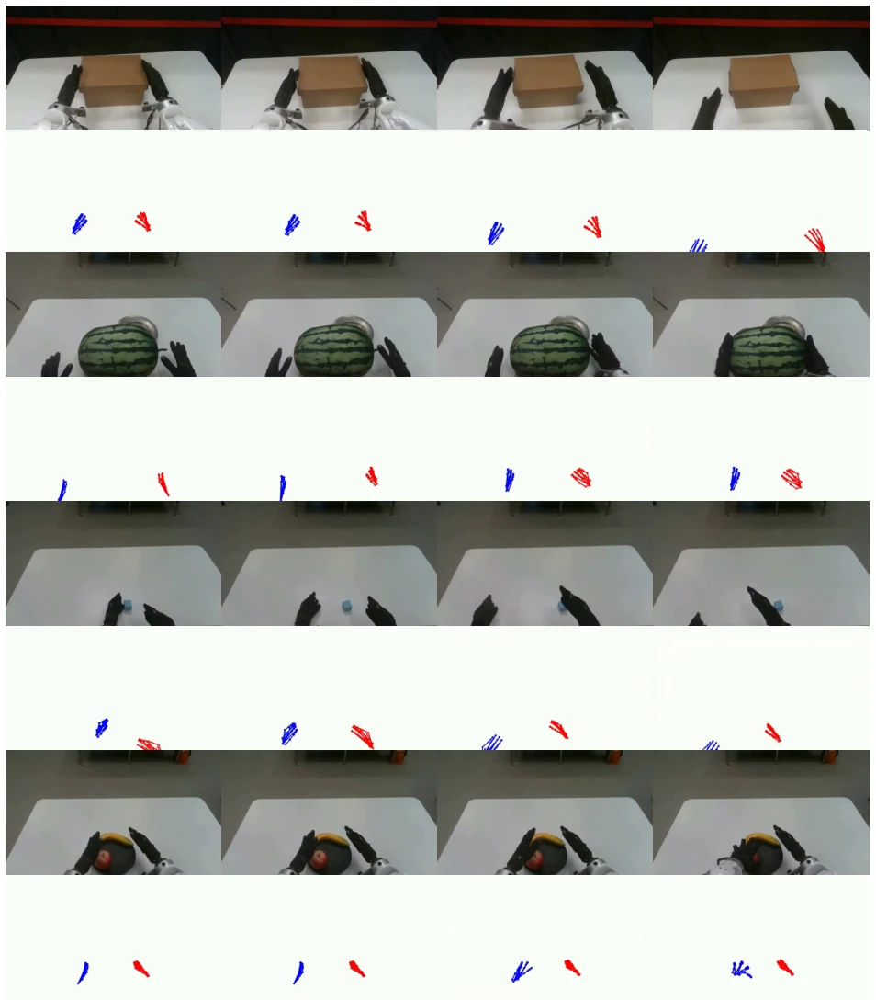

这篇论文把“数字遥操作”包装得挺高大上，本质是用视频生成模型替代物理机器人采集数据。40+ FPS 的实时性确实能骗过人的眼睛，但“数字”二字背后，依然是人类在动，只是省了机器人硬件。Sim2Real 的零样本迁移效果虽好，但依赖单张参考图，场景泛化能力是否真的 robust 还有待观察。相比物理遥操作，它解决了硬件瓶颈，却没解决人力瓶颈（还得人动）。不过作为数据引擎，它确实解决了长尾数据收集难的问题，算是 Embodied AI 数据瓶颈的一剂猛药，只是不知道这药会不会产生“幻觉”副作用，导致策略在真实世界“翻车”。此外，其深度感知表示虽然巧妙，但本质上仍是 2D 投影，对于复杂遮挡下的 3D 交互理解可能不如直接 3D 建模彻底。这种“数字孪生”式的遥操作，虽然降低了门槛，但能否真正替代物理世界的复杂物理交互，仍需时间验证。
This paper presents "digital teleoperation" in a rather sophisticated manner; essentially, it replaces physical robots with video generation models for data collection. The 40+ FPS real-time performance can indeed deceive the human eye, but behind the term "digital", it remains humans moving, merely bypassing robot hardware. While the Sim2Real zero-shot transfer performance is good, relying on a single reference image, whether the scene generalization capability is truly robust remains to be observed. Compared to physical teleoperation, it resolves the hardware bottleneck but fails to address the manpower bottleneck (humans are still required to move). However, as a data engine, it indeed solves the difficulty of long-tail data collection, serving as a potent remedy for the Embodied AI data bottleneck, though it remains uncertain whether this remedy will produce "hallucination" side effects leading to policy "crash" in the real world. Furthermore, although its depth-aware representation is ingenious, it is essentially still a 2D projection, and its understanding of 3D interactions under complex occlusion may not be as thorough as direct 3D modeling. This "digital twin"-style teleoperation, while lowering the threshold, still requires time to verify whether it can truly replace complex physical interactions in the physical world.
研究动机Motivation
机器人学习受限于数据稀缺，物理遥操作成本高、硬件绑定，无法捕捉长尾分布。现有工作如 Cosmos (Agarwal et al., 2025) 和 Genie (Bruce et al., 2024) 缺乏细粒度控制。Hand2World (Wang et al., 2026) 等虽能生成视频，但仍是人类中心，未解决具身差距。现有视频翻译方法 (Lepert et al., 2025a) 被动且无动作条件。需要一种机器人中心、动作接地、实时的系统。物理遥操作将操作员时间与特定硬件绑定，限制了数据规模。现有世界模型多关注状态预测而非视频生成，或仅支持粗粒度控制。人类到机器人视频翻译方法虽跨越视觉差距，但缺乏动作条件，无法用于交互式模拟。因此，亟需一种能解耦物理约束、提供高保真动作标签的数字遥操作范式。
Robot learning is constrained by data scarcity; physical teleoperation is costly and hardware-bound, unable to capture long-tail distributions. Existing works such as Cosmos (Agarwal et al., 2025) and Genie (Bruce et al., 2024) lack fine-grained control. Although Hand2World (Wang et al., 2026) and others can generate videos, they remain human-centric and fail to address the embodiment gap. Existing video translation methods (Lepert et al., 2025a) are passive and lack action conditioning. A robot-centric, action-grounded, real-time system is required. Physical teleoperation binds operator time to specific hardware, limiting data scale. Existing world models mostly focus on state prediction rather than video generation, or only support coarse-grained control. While human-to-robot video translation methods bridge the visual gap, they lack action conditioning and cannot be used for interactive simulation. Therefore, there is an urgent need for a "digital teleoperation" paradigm capable of decoupling physical constraints and providing high-fidelity action labels.

Figure 1 Physical vs. Digital Teleoperation. (Top) Physical teleoperation binds every demonstration to a real robot and a fixed workspace, capping throughput at operator-hours × hardware availability. (Bottom) Digital teleoperation replaces the real robot with RynnWorld-Teleop, a real-time action-conditioned world model that synthesizes the egocentric video the robot would have produced from a single reference image, and retargets the same gesture stream into embodiment-specific robot actions. Both pipelines emit synchronized (RGB observations, robotic actions) pairs, so digital teleoperation is drop-in compatible with downstream imitation learning, without ever moving a real robot.

Figure 2 Depth-Aware Representation. We bridge the gap between 2D projections and 3D dynamics by rendering hand skeletons with depth-modulated color and size.
Overall pipeline: Reference image + Hand pose -> Depth-aware skeleton -> DiT generates video -> Action retargeting. Innovations: 1. Depth-aware action representation, modulating depth information with color and size to resolve 2D projection depth ambiguity. 2. Progressive cross-domain training, pretraining on human videos first, then fine-tuning on robot data to bridge the embodiment gap. 3. Streaming autoregressive distillation, bidirectional teacher distillation into a causal student, supporting real-time inference. Specifically, the model is based on the Wan-2.2-TI2V-5B architecture, incorporating depth-aware skeleton videos as conditions. Pose signals are fused via distribution-aligned patch embeddings. Training is divided into two stages: pretraining on large-scale human videos first, followed by fine-tuning on robot data. Finally, 40+ FPS real-time generation is achieved through causal flow matching and DMD distillation.

Figure 3 Overview of RynnWorld-Teleop. (a) Actions are rendered as depth-aware skeletal videos and encoded into the latent space via a VAE. (b) We expand a pretrained video DiT to incorporate hand-pose conditioning using a distribution-aligned patch embedding branch. (c) The model is distilled into a causal student for interactive, autoregressive generation using a streaming rollout schedule.
4 tasks (dual pick, push block, etc.). Baselines: DP, π0. Metrics: Success rate, PSNR, FVD. Results: Adding generated data improves success rate; pure generated data also enables zero-shot transfer. FPS 40. Ablation shows pretraining and distillation are critical. Specifically evaluated on the TIANJI M6 robot, including dual pick, push block, two-arm lifting, lid placement. Comparing DP, π0.5, π0 policies. Results show that after using RynnWorld-Teleop data augmentation, success rates generally improved. π0 trained on pure generated data achieved an 82.86% success rate on the Block Pushing task. t-SNE analysis shows generated data and real data distributions highly overlap. Ablation experiments prove human pretraining and distillation are crucial for performance.

Figure 4 Task illustration. We design four manipulation tasks for real-world evaluation.

Figure 5 Feature Distribution Analysis via t-SNE. We visualize the high-dimensional feature embeddings of real-world trajectories and RynnWorld-Teleop-generated trajectories.

Figure 6 Qualitative Results of RynnWorld-Teleop. Our model effectively maps a single hand-gesture stream to both human and robotic embodiments. By pre-training on large-scale egocentric human videos, RynnWorld-Teleop absorbs rich manipulation priors and successfully transfers this knowledge to robotic execution. The synthesized videos maintain high fidelity and temporal coherence.

Figure 7 Generalization to Out-of-Distribution (OOD) Visual States. RynnWorld-Teleop generalizes along two axes that are absent from training: (i) unseen objects (top two rows), where the manipulated item in the reference frame is replaced by a novel category or shape; and (ii) unseen backgrounds (bottom two rows), where the tabletop texture is swapped for an environment not seen during training. In all cases, the modified reference image is obtained via off-the-shelf image editing, without any real-world object or scene modification. RynnWorld-Teleop preserves high visual fidelity, temporal coherence, and physically plausible dynamics under both object-level and background-level shifts.Figure 10 Hardware Infrastructure. The evaluation utilizes our standard robotic setup: a bimanual TIANJI M6 system equipped with WUJI hands. Detailed specifications including degrees of freedom (DoF), payload, and fingertip force are summarized to ensure the reproducibility of our manipulation benchmark.

Figure 12 Qualitative comparison. Unlike baselines that rely on SAM-generated masks for conditioning, RynnWorld- Teleop uses sparse skeletal poses, achieving superior fidelity and temporal coherence. Note that baselines are visualized at their native supported resolutions.

Figure 13 Qualitative results of RynnWorld-Teleop on robotic manipulation tasks. Starting from a single reference image and a sequence of human hand-pose streams, RynnWorld-Teleop synthesizes high-fidelity, temporally coherent robotic execution videos. The results demonstrate the model’s ability to render complex dexterous interactions, such as bimanual coordination and high-precision object handling, while maintaining strict adherence to the input action signal.